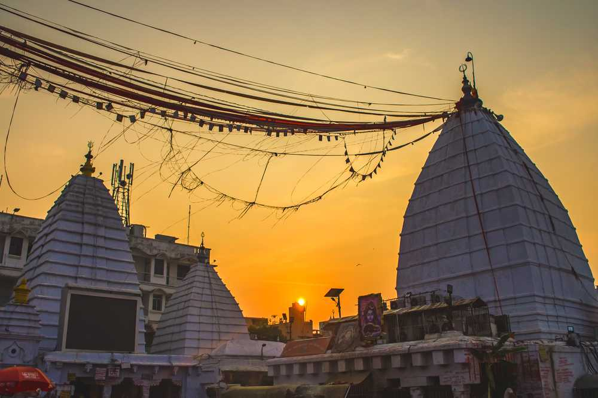

Deoghar
(pronounced Devaghar) is a major city in
Jharkhand,
India.
It is a holy sacred place of Hindus.
It is one of the 12
Jyotirlingas sites of Hinduism
(Baidyanath Temple) along with one of the
Shaktipeeth .
The sacred temples of the city make this a place for pilgrimage and tourists. The city is administrative
headquarter of Deoghar District at Santhal Parganas division of Jharkhand.
Deoghar is a Hindu word and the literal meaning of 'Deoghar' is God ('dev') and residence ('ghar') which basically means Gods Residence or House of Gods. Deoghar is also known as “Baidyanath Dham”, “Baba Dham”, “B. Deoghar”. The origin of Baidyanathdham is lost in time. The name Deoghar probably dates form the elevation of Great temple of Lord Baidyanath. Although The name of the builder of the temple seems to be not traceable certain portion of the temple is said to have been built by Raja Puran Mal.